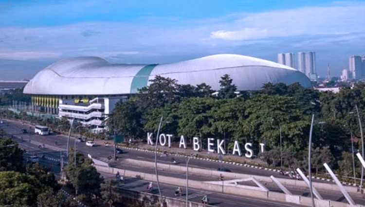

Sejarah
Kota Bekasi merupakan salah satu kota yang terdapat di provinsi Jawa Barat, Indonesia Nama Bekasi berasal dari kata bagasasi yang artinya sama dengan candrabaga yang tertulis di dalam Prasasti Tugu era Kerajaan Tarumanegara, yaitu nama sungai yang melewati kota ini Kota ini merupakan bagian dari megapolitan Jabodetabek dan menjadi kota satelit dengan jumlah penduduk terbanyak se-Indonesia Saat ini Kota Bekasi berkembang menjadi tempat tinggal kaum urban dan sentra industri,[3] kota Bekasi juga dijuluki sebagai Kota Patriot dan/ Kota Pejuang.
Dayeuh Sundasembawa atau Jayagiri, itulah sebutan Bekasi tempo dulu sebagai Ibu kota Kerajaan Tarumanagara (358-669). Luas Kerajaan ini mencakup wilayah Bekasi, Sunda Kelapa, Depok, Cibinong, Bogor hingga ke wilayah Sungai Cimanuk di Indramayu. Menurut para ahli sejarah dan fisiologi, letak Dayeuh Sundasembawa atau Jayagiri sebagai Ibu kota Tarumanagara adalah di wilayah Bekasi sekarang. Dayeuh Sundasembawa inilah daerah asal Maharaja Tarusbawa (669-723 M) pendiri Kerajaan Sunda dan seterusnya menurunkan Raja-Raja Sunda sampai generasi ke-40 yaitu Ratu Ragumulya (1567-1579 M) Raja Kerajaan Sunda (disebut pula Kerajaan Pajajaran) yang terakhir.
Wilayah Bekasi tercatat sebagai daerah yang banyak memberi informasi tentang keberadaan Tatar Sunda pada masa lampau. Diantaranya dengan ditemukannya empat prasasti yang dikenal dengan nama Prasasti Kebantenan. Keempat prasasti ini merupakan keputusan (piteket) dari Sri Baduga Maharaja (Prabu Siliwangi, Jayadewa 1482-1521 M) yang ditulis dalam lima lembar lempeng tembaga. Sejak abad ke 5 Masehi pada masa Kerajaan Tarumanagara abad kea 8 Kerajaan Galuh, dan Kerajaan Pajajaran pada abad ke 14, Bekasi menjadi wilayah kekuasaan karena merupakan salah satu daerah strategis, yakni sebagai penghubung antara pelabuhan Sunda Kelapa (Jakarta).